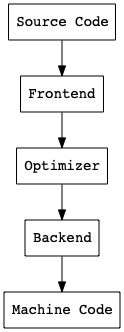
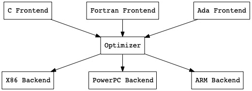

Welcome to llir/llvm
Overview
Why LLVM?
When creating a compiler, a classical design may look like this:

This worked quite well in the old days. There was only one input language, and one target machine.
Today there exist a lot of target machines to support! And a lot of input languages. Without a shared representation many parts of the compiler would have to be reimplemented for every input/output pair.
LLVM offers a solution to this problem by defining such a shared representation, namely LLVM IR. Here is the new design:

To write a compiler for a new language, now we only have to focus on our frontend. Similarly, to add support for a new target machine, now we only have to add a new backend. And to improve the code generation of all input/output pairs, now we only have to focus on the middle end optimizer. Thank you, Chris Lattner and all those who have contributed to LLVM.
Why llir/llvm?
The aim of llir/llvm is to provide a library for interacting with LLVM IR in pure Go. Importantly, llir/llvm is not a binding for LLVM. Therefore, you don't have to compile LLVM (which could take a few hours), and no need to fight with Cgo. Work under a pure Go environment and start your journey.
Installation
To install llir/llvm, all you need to do is: go get github.com/llir/llvm.
Usage
According to packages, llir/llvm can be separated into two main parts: